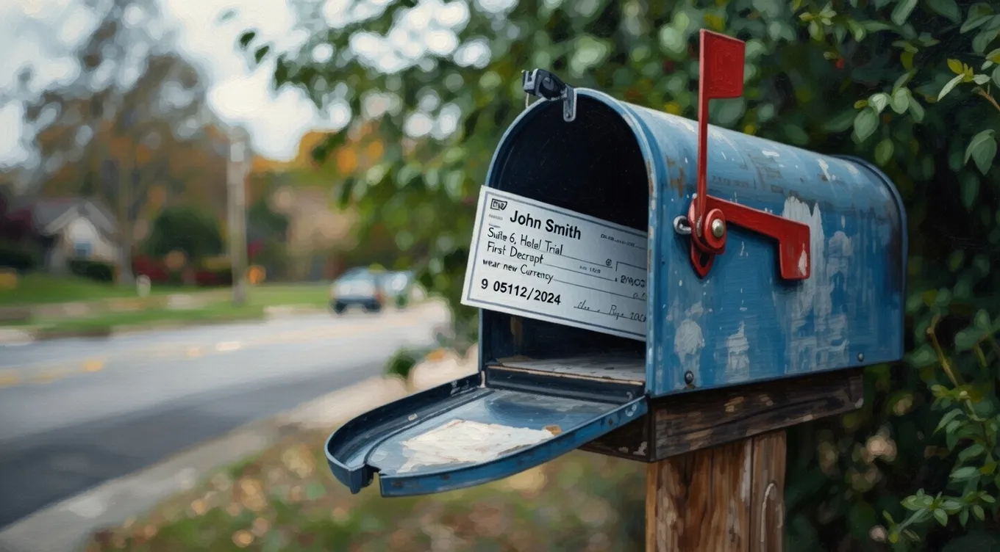

Massive Relief: How to Claim Your Federal $2,000 Payment in February 2026


As the calendar flipped to February 2026, millions of Americans were anxiously waiting for a financial lifeline - a one-time federal payment of $2,000. For many, this infusion of cash would be a welcome relief from the pressures of everyday expenses. But for others, the process of claiming this payment would be shrouded in uncertainty.
The federal government's decision to provide this payment was a response to the economic challenges faced by many citizens. With the payment's arrival, people are looking for clear guidance on how to access these funds. The good news is that the process, while complex, can be navigated with the right information.
Table of Contents
Understanding the Payment
The $2,000 payment is part of a broader effort to provide economic relief to those who need it most. This initiative aims to help individuals and families cover essential expenses, from rent and utilities to food and healthcare. However, the specifics of who is eligible and how to apply have been less clear. What changed? The recent updates from the federal government have shed more light on the application process and eligibility criteria.
But that's not the whole picture. The application process involves several steps, including verifying eligibility, gathering required documents, and submitting the application through the designated portal. Here's the thing: the portal is designed to be user-friendly, but some individuals may still encounter difficulties, especially if they lack access to reliable internet or have limited computer skills.
The numbers tell a different story when it comes to those who are most in need of this relief. Many are still struggling to make ends meet, and the $2,000 payment could be a significant help. That's where it gets complicated - ensuring that the funds reach those who need them the most, while also preventing fraud and misuse.
Eligibility and Application
To be eligible for the $2,000 payment, individuals must meet certain criteria, including income thresholds and residency requirements. What's more, the application process requires careful attention to detail to avoid delays or rejection. The federal government has established a dedicated website and hotline for those seeking assistance with their applications.
For those who are eligible, the application process can be completed online or by mail. However, the online portal is the preferred method, as it allows for faster processing and reduces the risk of errors. The key is to have all the necessary documents ready before starting the application, including proof of income, identification, and residency.
Also Read
More trending stories →Navigating the Process
The application process for the $2,000 payment involves several key steps. First, individuals must verify their eligibility through the federal government's website. Next, they must gather all required documents and submit their application. The federal government has provided a checklist of required documents to help applicants prepare.
Key Takeaways
- Verify eligibility through the federal government's website before applying.
- Gather all required documents, including proof of income and residency.
- Submit the application through the designated portal or by mail.
The federal government has also established a series of resources to help applicants navigate the process, including a dedicated hotline and online support. These resources can provide valuable guidance and support for those who are struggling with the application process.
Additional Resources
In addition to the federal government's resources, there are also a number of non-profit organizations and community groups that can provide assistance with the application process. These organizations often have experience working with individuals who are struggling to access government benefits and can provide valuable guidance and support.
For those who are eligible for the $2,000 payment, it's essential to be aware of the potential scams and phishing attempts that may arise. The federal government has warned applicants to be cautious when providing personal and financial information, and to only use the official website and hotline for assistance.
Frequently Asked Questions
What is the deadline to apply for the $2,000 payment?
The deadline to apply for the $2,000 payment has not been officially announced, but applicants are encouraged to submit their applications as soon as possible to ensure timely processing. The federal government will provide updates on the application deadline through its website and social media channels.
How long does it take to process the application?
The processing time for the $2,000 payment application can vary depending on the volume of applications and the speed of the review process. However, the federal government aims to process applications within a few weeks of receipt.
Can I apply for the $2,000 payment if I'm not a U.S. citizen?
Eligibility for the $2,000 payment is generally limited to U.S. citizens and certain qualified non-citizens. However, the specific eligibility criteria may vary depending on the individual's circumstances, and applicants should consult the federal government's website for more information.
What if I encounter issues with my application?
If an applicant encounters issues with their application, they can contact the federal government's hotline or seek assistance from a non-profit organization or community group. These resources can provide valuable guidance and support to help resolve any issues and ensure that the application is processed successfully.
Conclusion
The $2,000 payment is a vital lifeline for many Americans, and the application process, while complex, can be navigated with the right information and support. As the federal government continues to provide updates and resources, it's essential for applicants to stay informed and vigilant, especially when it comes to potential scams and phishing attempts.
Looking ahead, it's crucial for individuals and families to stay up-to-date with the latest developments on the $2,000 payment and other economic relief initiatives. By doing so, they can ensure that they receive the support they need to weather the current economic challenges and build a more stable financial future.
Sarah Mitchell
Senior Tech Editor
Tech journalist with 8+ years of experience covering the latest in smartphones, EVs, AI, and consumer electronics. Bringing you accurate, well-researched stories from the world of technology.
Leave a Comment